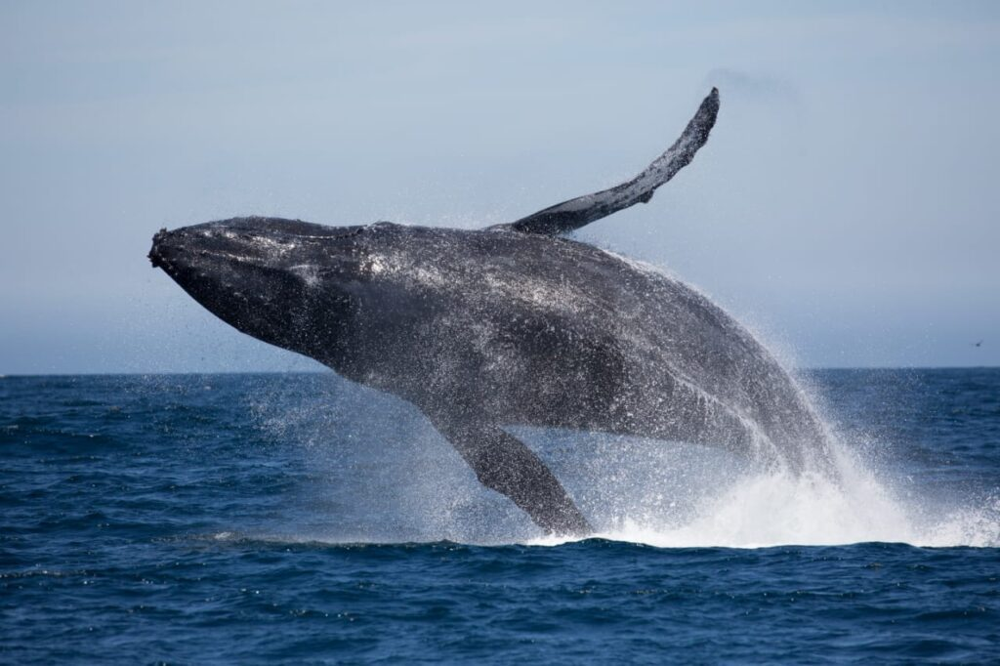

Sri Lanka, like many other islands, is home to a largenumber of endemic species, or animals and plants that are unique to our planet.
The vast number of species that call the Tear Drop Isle home has led to the nation being recognized as one of the top five biodiversity
hotspots in the world. Continue reading to find out what some of Sri Lanka's top national parks have to offer.
The Horton Plains, which are more than 2,000 meters above sea level, seem to be in a different planet than the rest of Sri Lanka. A vast expanse of the park is enveloped in immaculate cloud forest, with strikingly steep cliffs forming its southern edge. One of the greatest spots for bird viewing, it is home to several unique species.
Gal Oya, the only national park in Sri Lanka that offers boat safaris, guards the enormous Senanayake Samudra Reservoir. 32 different animal species can be found in the park, and one of the main attractions for tourists is seeing herds of elephants swim across the reservoir to go from island to island.

One of the greatest spots in the world to watch wild elephants is Udawalawe, which is framed by the towering Central Highlands. Along with other species found in the park including water buffalo, sloth bears, wild boar, spotted deer, and the indigenous toque macaque, herds are sometimes sighted roaming in groups of up to 100.
| NAME OF THE ANIMAL | INTERESTING FACTS ABOUT ANIMAL | IMAGE OF ANIMAL |
|---|---|---|
| SAMBAR | sambar, the largest deer species, plays a crucial role in the island's biodiversity, food chain, and ecosystem. Its robust build and branching antlers influence plant growth and distribution. The sambar is also culturally significant. |  |
| TURTLES | Sri Lanka's beaches are crucial nesting sites for endangered sea turtles, such as Green Turtle, Loggerhead Turtle, Hawksbill Turtle, and Olive Ridley Turtle. Conservation efforts focus on protecting these sites and raising awareness about their importance, preserving coastal ecosystems, and sustaining marine life. | |
| BLUE WHALE | Sri Lanka is a top location for observing the majestic blue whale, the largest animal on Earth. The region's waters off the southern coast, particularly around Mirissa, serve as a crucial feeding ground for these giants, highlighting the importance of marine conservation. |  |